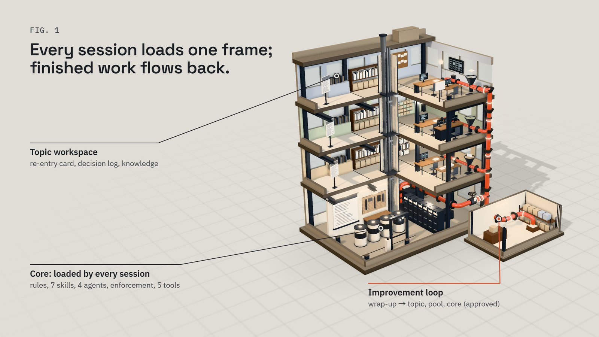

2026-11-01 · WF · Workflow Core
An AI workflow that lives in documents never reaches the work
An AI workflow written only as documents never reaches the moment of work. Install it instead into the moments where work happens — session start, project init, review, and wrap-up — and let every finished task send its lesson back to the narrowest layer where it actually repeated.